=====================================================================================
大势判断程序，跌势中是否转向
下跌的主要走势是否爆发，就是休息一段，然后再次暴跌
盘中出现第一段下跌反弹或者不反弹，出现新低
如果有反转走势，反转走势可以是，双底，两段下跌反转，两次跨越反转，是否产生第二段上涨
盘中是否有真空没有填
=====================================================================================
大盘处在上升期间
大盘处在下跌期间
刚刚开盘后的小型走势
大盘处在下跌期间
TOP
大盘出现快速下跌
不断从一个点反弹后，冲高，下来走平后破位
下跌期间出现回调
大幅下跌后，没有回调，缓慢下跌后，继续大跌
大幅快速下跌后，很快反弹，到了比原来高点
低一些的地方
下跌的转向
出现了长时间回调跨越走势后，再次短时间跨越
底部的形状
底部出现小幅冲高后，走平的走势
大盘处在上升期间
TOP
上升期间发生的样子
上升期间出现M形状的走平
上升期间不断回调后冲高
上升期间发生长时间震荡
上升期间发生小幅台阶的走势
上涨期间碰到阻力点，后退破位
上升的结束和转折
上升期间头部的形状
上升期间发生两次跨越，第一次慢，第二次快
上升休息后，出现长时间的缓慢上涨
大幅快速下跌后，很快反弹，到了比原来高点低一些的地方
TOP
这种时候是做空的好机会。
一个主要走势是跌势的走势，反弹的时候速度很快。而且反弹的幅度很大。很短时间就反弹到了和原来位置差不多的地方
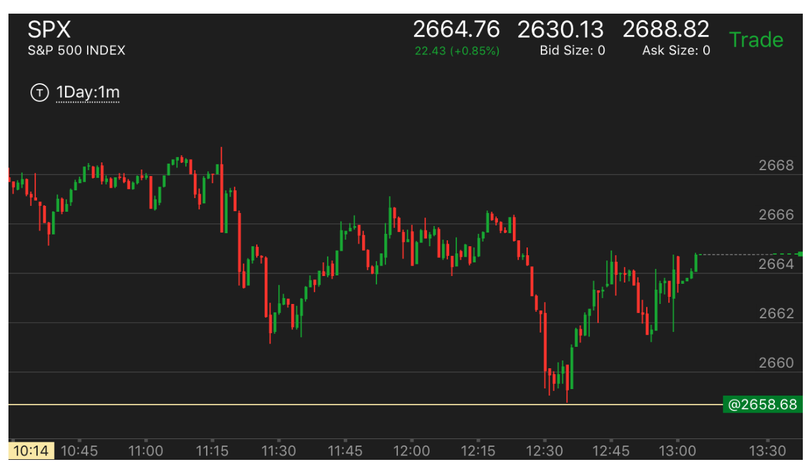
图示：11:30很快反弹，看它的幅度，很快就反弹到了只比开始下跌的地方底两个点，然后长时间震荡，而且在底部反弹很快。
说明仍然处于跌势。
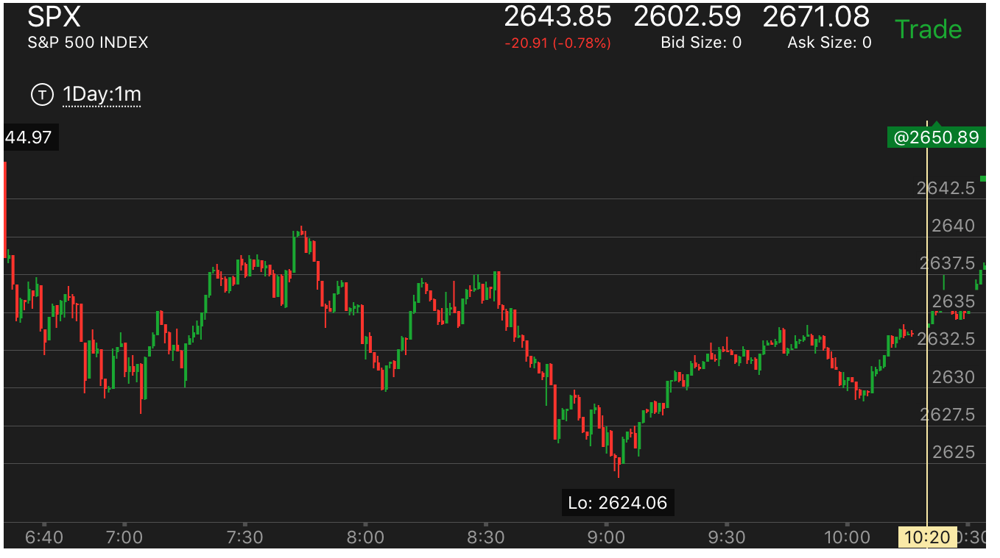
图示：8：00立刻反弹，反弹幅度很快到了比原来高点低两个点的地方，说明还是要跌的。而且会破前面的低点。
而9：00下跌的时候，则非常缓慢，在底部停留很久。这样才是要涨的走势。所以不用去着急试图超最低点，而是要做空。做空有充足的时间。
也说明主要走势是跌势。
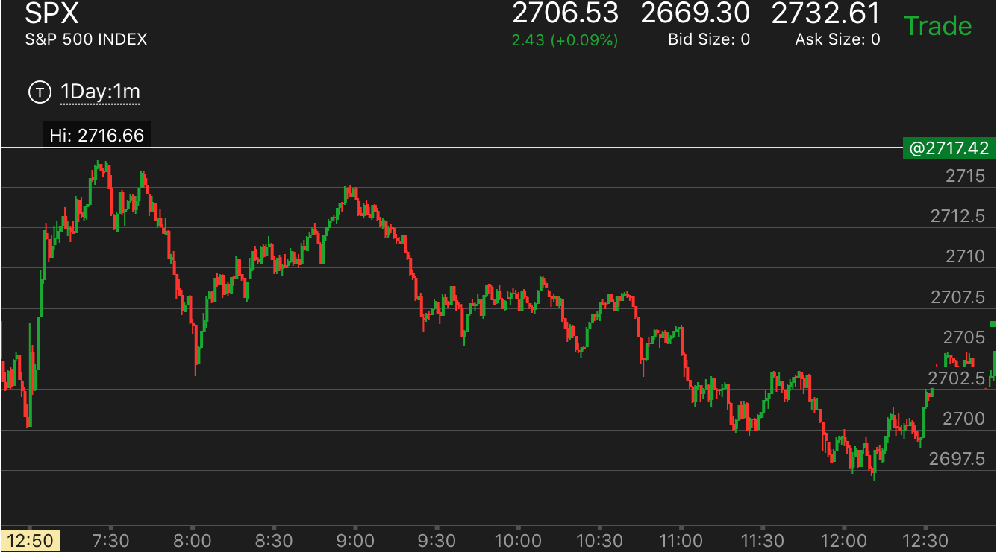
图示：8：00加速下跌后，开始反弹，虽然反弹开始比较慢，但是后来还是比较弱的。一直反弹到了和原来高点差不多的地方，开始缓慢走低。
说明要跌。下跌后，分别在9：40以及10：20快速反弹，说明主要走势是下跌，不要去超底，而是等它反弹后做空。在11：20和12：00它在底部时间很长，
可以做多反弹。
大幅下跌后，没有回调，缓慢下跌后，继续大跌
TOP
这个走势关键在于，它跌破了前面的低点，创新低，所以即使跌了很多，也没有任何回调
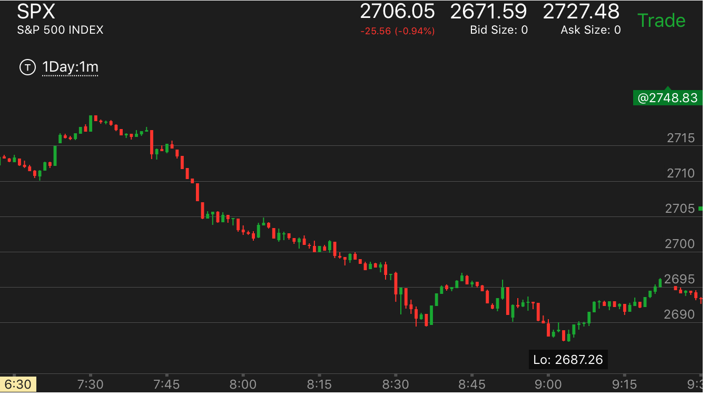
图示：7：50从最高的大跌了15个点，但是没有任何反弹，就走平，缓慢走低，然后继续大跌。
这个说明，不要做反弹，抄底的走势。它跌破的了前面的低点，而且刚刚低不多。它也不需要回调了。而且从一个冲高大跌的走势下来，比较强。
下跌期间出现回调
TOP
下跌幅度很大，回调也很大。
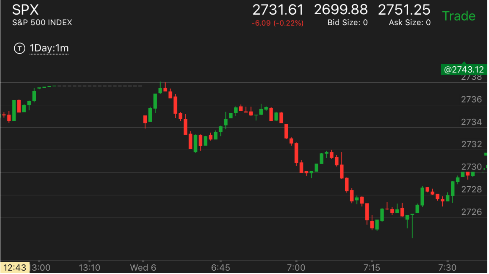
图示：6:40在底部停留时机不长，就开始反弹，它的反弹速度很慢，
似乎很强的样子。但是它很快就反弹到了比高点低两个点的地方，反弹幅度比较大，
然后长时间的走平。这样，就应该做空了。
刚刚开始下跌的时候，幅度很小，就开始回调，很容易让人觉得它要继续涨，要主要观察。它
走平的时候，是倾斜向上的，虽然幅度很小。那是因为下跌的幅度就很小。

图示：7：40下跌，走平，然后开始反弹，让人觉得它要继续涨了。因为前面的惯性。
7：40下跌后，再次反弹，一开始看起来是走平，其实仔细观察是在斜着向上。这个走势很容易让人被前面的强势上涨所影响，而去做多。
出现了长时间回调跨越走势后，再次短时间跨越
TOP
出现这样的就到达底部了。会转向。
图示：6：40反弹后，在顶部走平了10分钟，然后大跌跨越前面低点。
7：00再次反弹，这次只有3分钟，就再次下跌跨越。一旦停止下跌，就是底部了。
大盘出现快速下跌
TOP
快速下跌前发生的事情
如果前面上涨很久，出现了顶部后，快速下跌。
如果前面冲高后，在高位长时间震荡，然后快速下跌
如果前面从一个底部上涨，然后快速回到这个底部附近
1. 如果立刻反弹，幅度比较大，反弹到了前面的阻力点。可以做空。
2. 如果走平，如果是走平后下跌，走平时间只要4分钟，而不是刚刚跨越点，而且跌幅比较大,反弹可能很大,反弹前可能创新低，但是也可能只稍微低一下就直接反弹
3. 如果立刻反弹，但是反弹幅度很小，再次下来，可能是双底反弹，如果双底反弹，很快就幅度很大，那么会继续跌。如果双底反弹稍微反弹一下，就开始走平，那么会大涨
4. 如果立刻反弹，反弹幅度不大，然后开始走平很久。走平的位置是前面的阻力点。那么可能走平后继续大跌
5. 如果反弹的位置比前面的低点不是低很多，那么大盘可能处于升势。如果低很多，那么大盘处于跌势。
6. 如果在升势出现这样的下跌，那么跌倒前面的支撑点，走平或者震荡几分钟，会大涨，创新高。
7. 如果在升势，前面出现双顶，这样的快速下跌，会突破双顶。它会跌破原来的震荡低点，停留在更早的支撑点，走平几分钟，然后大涨
8. 如果出现立刻反弹，再次创新低，那么最后的低点会是一段长长的加速下跌，
9. 如果是刚刚开盘出现，如果前面有走平几分钟，那么这个快速下跌，一旦走平4分钟，可以做多。
10.
上升休息后，出现长时间的缓慢上涨
TOP
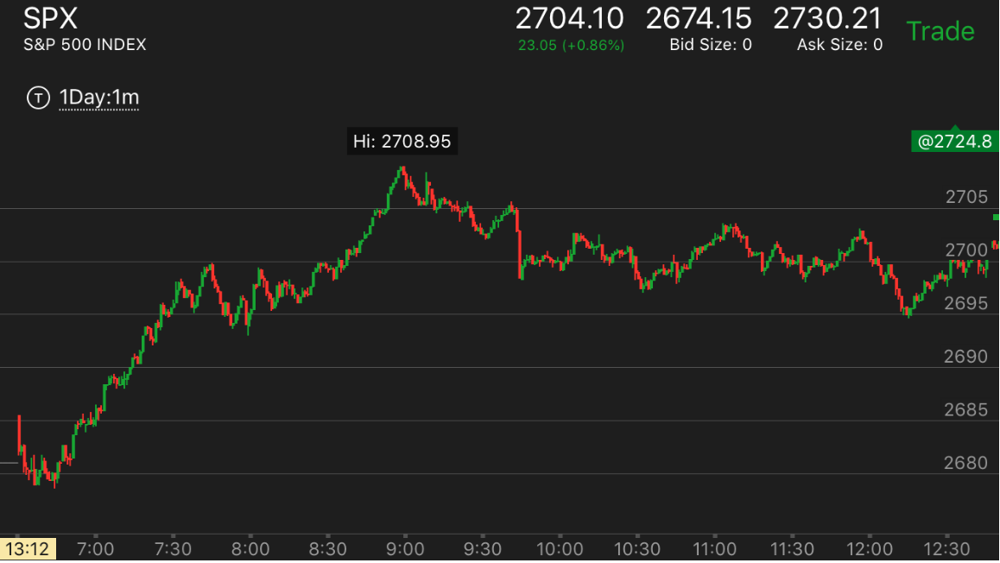
图示：
1. 不断小步上涨后，7：50转折，可以看到它转折的时候，没有加速上涨，而是很平缓，说明这个只是休息，没有到达顶部。它
回调后，8：40恢复上涨。虽然仍然很缓慢。但是它持续不断的上涨。实际是一个加速走势。
2. 它的真空是在2695附近。也就是前面回调的地方。不是前面小步台阶的地方。
上升期间发生两次跨越，第一次慢，第二次快
TOP
上涨或者下跌的时候，回测关键点的时候，时间很长，这样就意味着未来会两次跨越，到达转折点。

图示：11：30开始上涨，然后回测前面的低点，用了很长时间，再次跨越后，12：10回调一些，再次跨越，
这样就到达顶部了。应该充分利用。
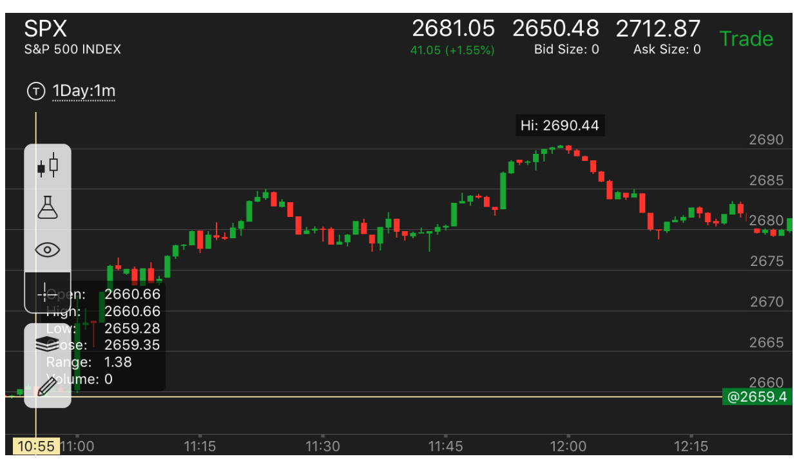
图示：11：25到11；45回测关键点，时间很长。它后来开始跨越。但是这个跨越第一次没有直接越过前面
高点，然后回调，然后再次跨越。这样也可以算是一次加速，所以不要拘泥于一种形式。
上升期间头部的形状
TOP
加速冲高后，立刻下跌一点，然后缓慢走平后下跌
图示：7：30冲高后，立刻从高点下来，走平三分钟，然后持续下跌，应该看到它走平三分钟后，立刻做空。
即使错过，也要追赶。它开始跌的很慢。
从高点下跌后，比较缓慢，然后突然上冲
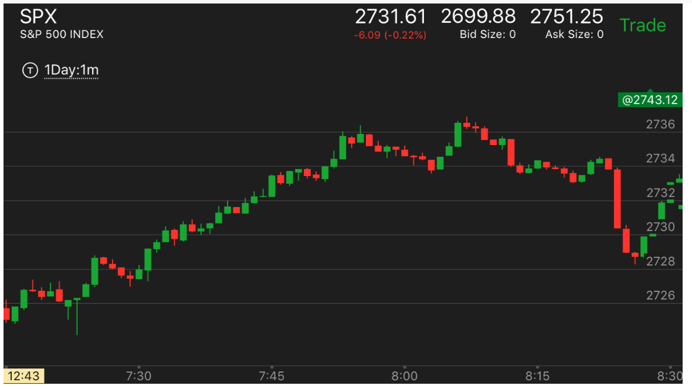
图示：首先它不断上涨，出现了疑似的顶部，或者接近前面的阻力点。
7：50开始下跌，但是很慢。可以想到，不会这么直接下跌的。8：05它开始反弹，加速冲高，出现新高。
但是没有很高，就开始走平，缓慢下跌。这样就是顶部了。可以做空
从高点快速下跌，反弹的时候，却涨一下，就开始走平，然后再次冲高到了高点
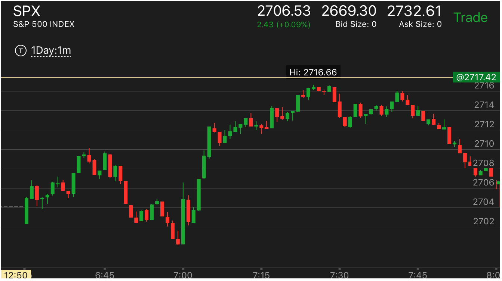
图示：
1. 7:25从高点走平后，迅速下跌，幅度很大。通常这个是下跌后，继续大涨的标志。
但是它开始反弹的时候，反弹一点就开始走平很久。然后冲高后，回到高点，却下来了。如果是大涨，会一举突破高点的。
这样加上前面判断它没有填空。说明要跌。应该做空。
顶部大幅冲高后，看它在顶部的样子决定是否做空。如果回调很大很快，那么会继续涨，如果回调很小，很慢，那么会大跌
如果有连续两个山峰，通常第二个山峰下跌的幅度小于第一个，显得很强，其实是为了后面大跌。跌势也有类似的走势。
第二个低点的反弹幅度很小，不到前面就开始走平了。然后大涨。

图示：
1. 11：00出现加速大涨后，快速回调，回调幅度很大。这个说明会继续涨
应该做多。它继续大涨，创新高后，开始缓慢下跌。这个要做对比。要想到这个是市场让你看到它的情况。
2. 它第二个山峰回调速度明显低于前面。
而且只回调了2个点后，在11：10开始走平震荡。和前面一下回调4个点相比，显得很强。然而这个反而是要大跌的样子。我会被诱惑在这个地方做多，因为根据前面的经验。
它会继续大涨。结果暴跌。同时这两个连续新高，间隔时间很短。其实是一种加速走势，形成跌势。
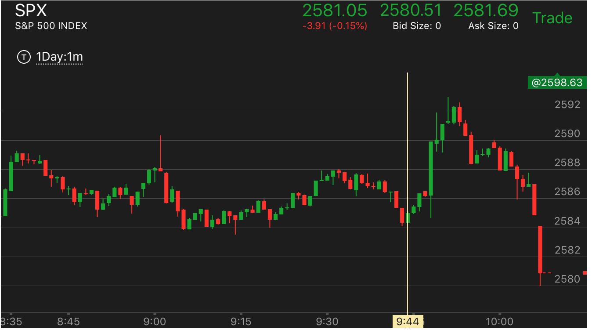
图示：9：50快速冲高，它在经过长期上涨后，这样是一个加速上涨，关键是它是否是最后一击。还是说还有更高。
它在顶部出现走平。开始下跌的时候，非常缓慢，一分钟才跌了1个点。而且刚刚下跌很少，就在阻力点2588反弹让前面如果在2588做空的人很着急。因为它是一下冲上来的。
如果有人在前面高点做空，会被套牢。这时更加着急。因为它稍微回调就开始似乎大涨了。会让这些人割肉。然后大跌。
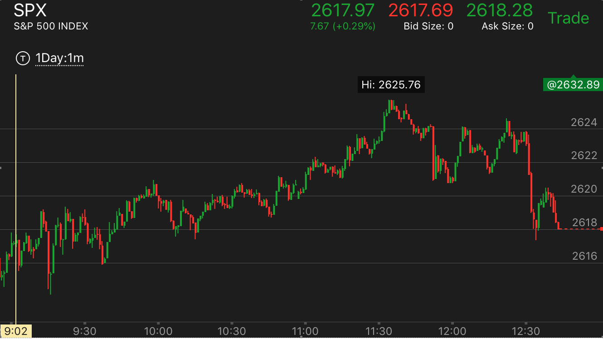
图示： 11:30达到顶部后，不用着急做空。要等它下跌后，再反弹。可以看它开始下跌很猛烈。
立刻反弹，说明到了要跌的时候了。反弹的时候，回到比高点低一些，但是不是很低的地方。这样就可以做空了。这个例子里面它，反弹了两次。才最后下跌。
可以看到它第二次要大跌以前，它下跌后反弹幅度很大，显得很强，和前面一次相比。这样是一个反直觉的走势。
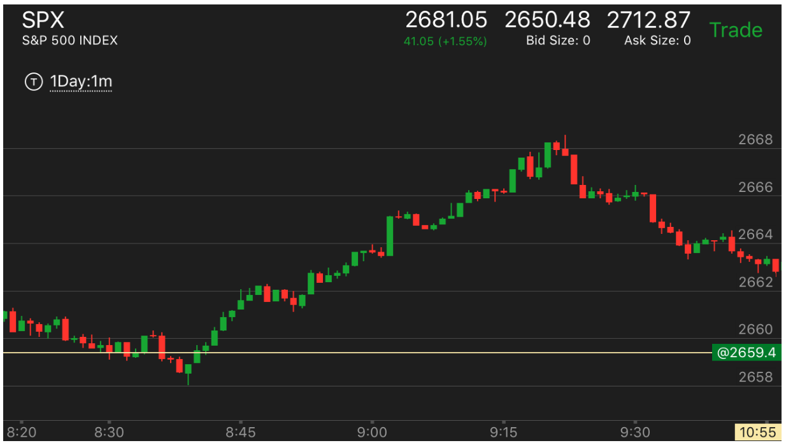
图示：从8：40开始，它一路上涨，中间只有走平，但是没有回调，可见一个主要走势，不能
去做它的回调来赚钱，而是要紧紧拿住。到了9：15.它走平后上涨，出现两个峰，一个峰，立刻回调比较大，
第二个峰更高，回调很小。属于加速。这样到了顶点。
上涨期间碰到阻力点，后退破位
TOP
盘中出现阻力点，后退破位：第一个阻力点常常是走平的，而第二个阻力点是尖的，它通常震荡，
震荡中间出现新低，然后反弹，碰到阻力点立刻下来。另外前面有没有填补的真空。这样它会迅速下跌。跌破震荡范围，
到了前面的低点后，出现一个底部的走势，然后大涨，突破低点。
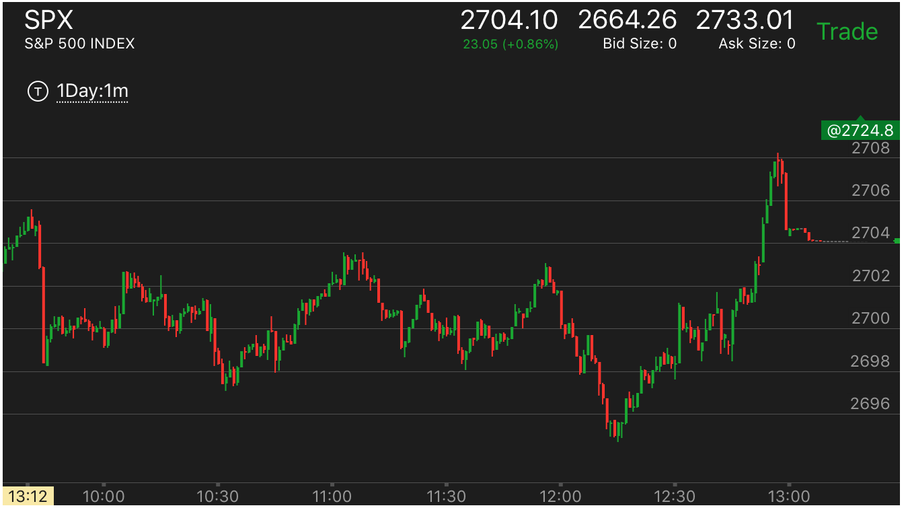
图示：
1. 10：30出现比原来加速下跌更低的点，立刻反弹。碰到2703，走平，然后下来。
11：58分再次下来，被阻力点堵住。它开始大跌。而前面有个空没有填。这个大跌正好填补这个空。它在底部走平4分钟。
开始缓慢上涨，然后一举突破阻力点后，大涨。
2. 12：20开始上涨时候，也是小步台阶上涨走势。要记住这个不是走平后上涨走势。
上升期间发生小幅台阶的走势
TOP
上涨期间不断出现，冲高走平，再次冲高，每次冲高的幅度也不大，但是它的走平时间很短，所以不能是两段走势
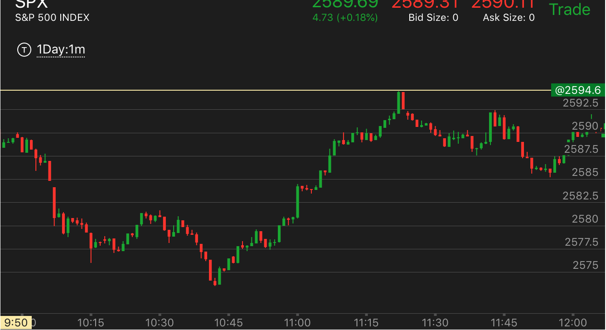
图示：10:45经过一个转折后，它开始上涨，它一直上涨很缓慢，中间不断的走平。但是也不代表要回调。所以不是说上涨后走平就是回调了。
这个很难说。如果一开始上涨的很缓慢，而走势本身很强，那么后面就是走平也会不断上涨的。这个走势的开始上涨非常的慢，10分钟才涨了2个点。这个本身就是一种强势的表现。
小步台阶上涨走势：每次涨幅不大，走平时间很短，估计只有5，6分钟。这个不会产生真空。
不要以为它会填这个真空。要注意和走平后上涨走势区分，
也要和5浪走势区分。5浪走势每个台阶是比较大的。
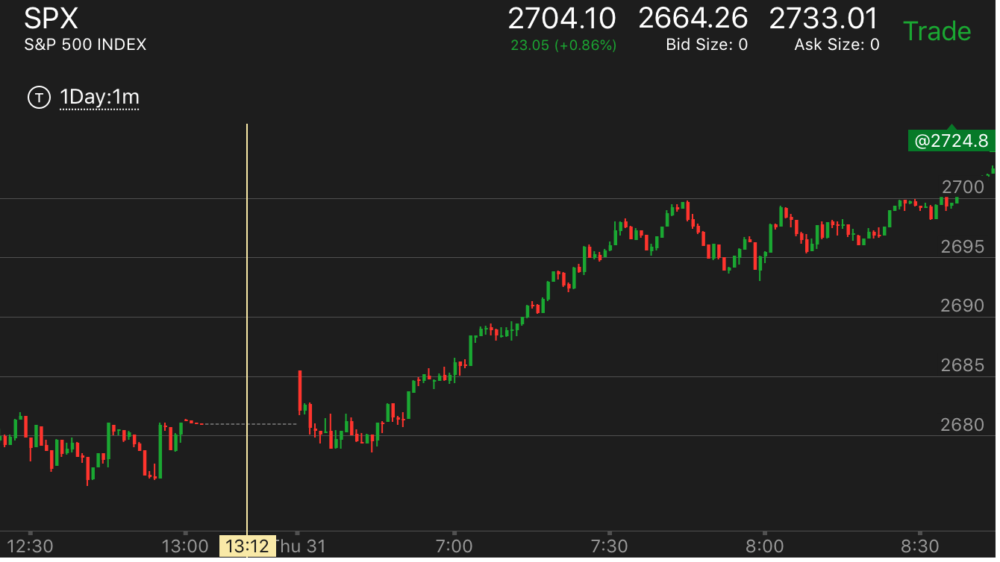
图示：6：50开始，小步上涨，可以看到它每次涨幅很小。走平时间很短。所以即使不会调，
也没有关系。这个不是真空走势，这样走法，真空已经填补了。它的真空发生在2695附近。远远高于起始点，所以不要以为它一定会下来。
上升期间发生长时间震荡
TOP
升势中距离低点不远发生长时间震荡。震荡点会成为支撑点。
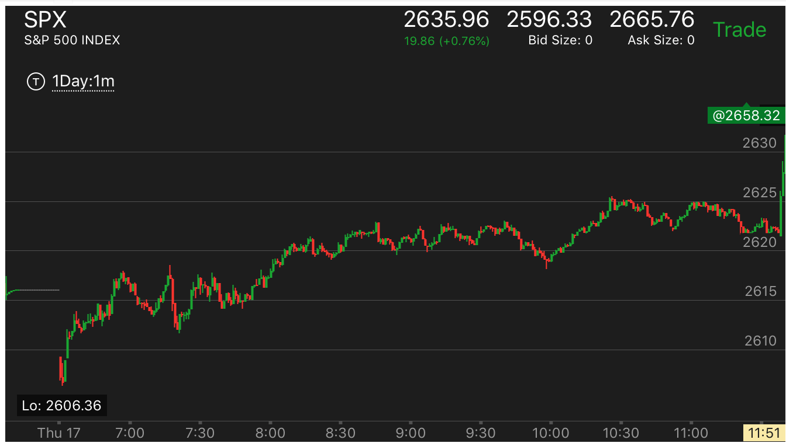
图示：从8：20到9：50一直在2620到2622之间震荡，说明大盘要涨。而且看看它前面的低点。距离很近。底部在2614，前面支撑点
在2618.距离非常近。说明它一旦突破一定会继续涨的。它先大跌，回头探测2618，然后大涨一举突破前面的震荡点。但是刚刚突破，就开始回头。
虽然它在高点走平，似乎是个下跌的样子。它的低点在震荡点以上。说明会继续涨。所以这个时候不要被它在高点走平所欺骗，以为这个会大跌。
上升期间不断回调后冲高
TOP
不断升高后，出现了小幅冲高后，走平的走势，没有回调。一个正常的升势，应该冲高后，回调很大。
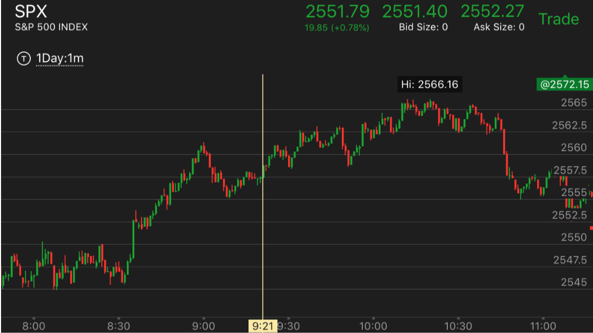
图示：在经过长时间的上涨后，10：10，它稍微走高后，走平，中间虽然回调，但是幅度很小。继续走平。
他已经走高很多了。出现这个走势，看起来很小。却是压垮骆驼的最后稻草。
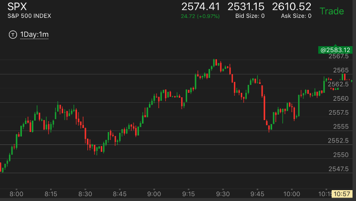
图示：9:15到9：25走出一個小的5浪走勢，然後它的頂部不是平的，而是緩慢向下的。
這個走勢本身有點像冲高后快速大幅回調。但是仔細看，它回頭幅度還是太小了。所以是個頭部。會下跌。9:35分回调，回到比高点只低2个点的位置后，走平。
这个会大跌。所以即使错过前面的下跌，这个应该做。这个跌幅会更大。
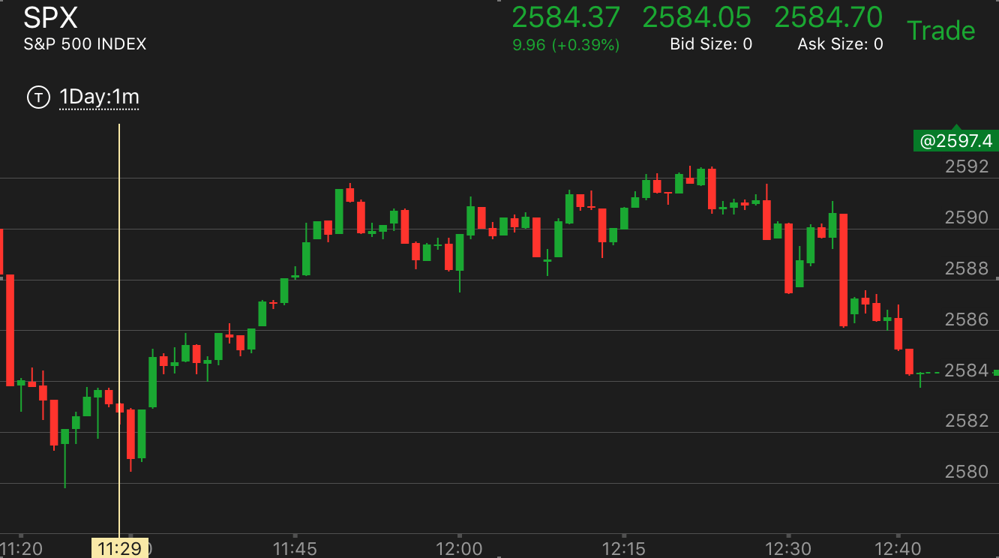
图示：11：45冲高后，每次都回调很大。直到12：15。回调很小，在高点走平。然后走低。走低才一个点。就开始走平。
几分钟。这个说明走低幅度很小。会大跌。应该紧紧拿着它。它大跌后，12：35反弹。看看它的幅度。它仍然比最高的低两个点不到。更加说明它要大跌。最后它跌幅很大。
这种走势，应该紧紧拿住，它每次反弹，都要忍住不要卖，虽然很难受。这是一个典型的逐渐增强的跌势。
冲高，新高后，回调只有前面的一半。
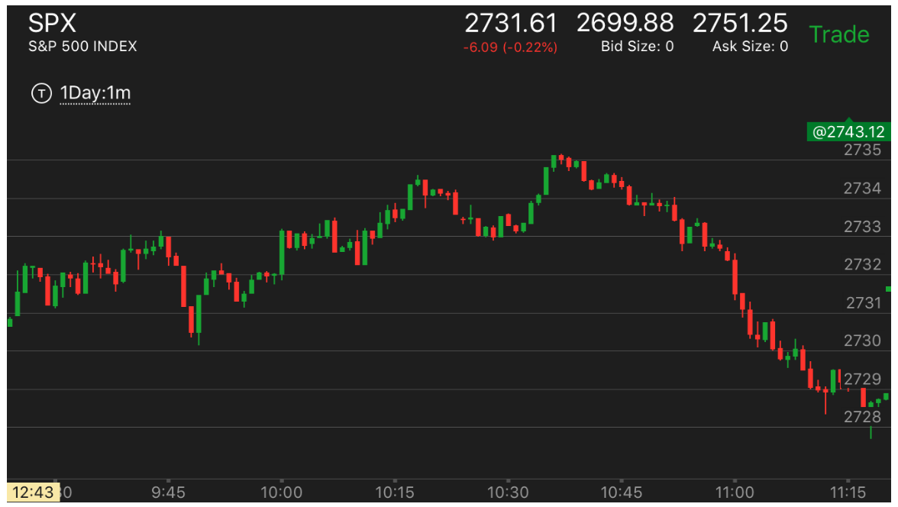
图示：10:15冲高后，回调比较大，而10：40冲高后，回调幅度很小，
就开始走平。这样就是要大跌的标志。
如果前面从一个底部上涨，然后快速回到这个底部附近
TOP
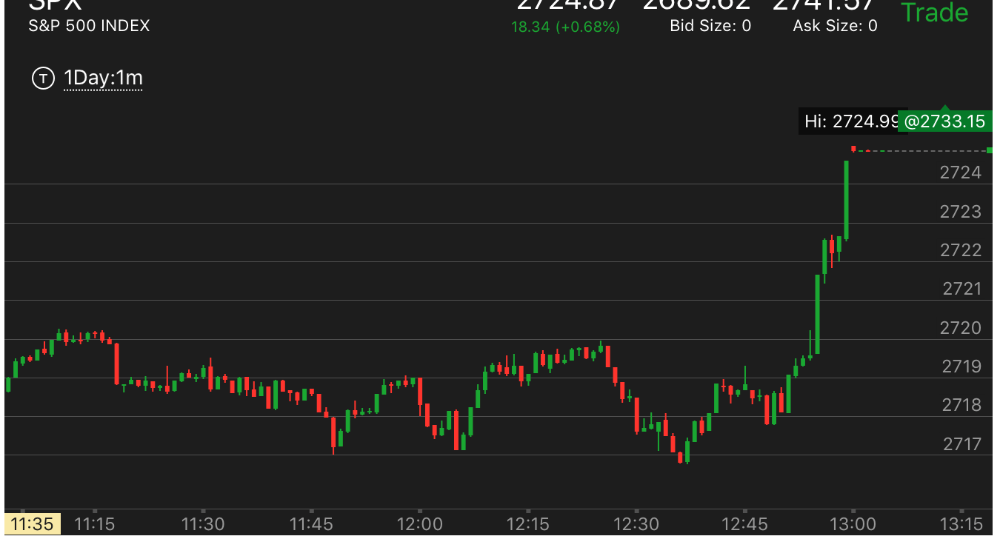
图示： 11:45和12：10出现双底后，大涨，然后走平很久。12：40再次回到原点。然后大涨。
如果前面冲高后，在高位长时间震荡，然后快速下跌
TOP
这样的走势，如果出现快速下跌，不能做多，而是要做空。它在高位震荡很久，是积累很多的动能的。即使快速下跌也可以维持很久。
上涨很久，出现顶部后，快速下跌
TOP
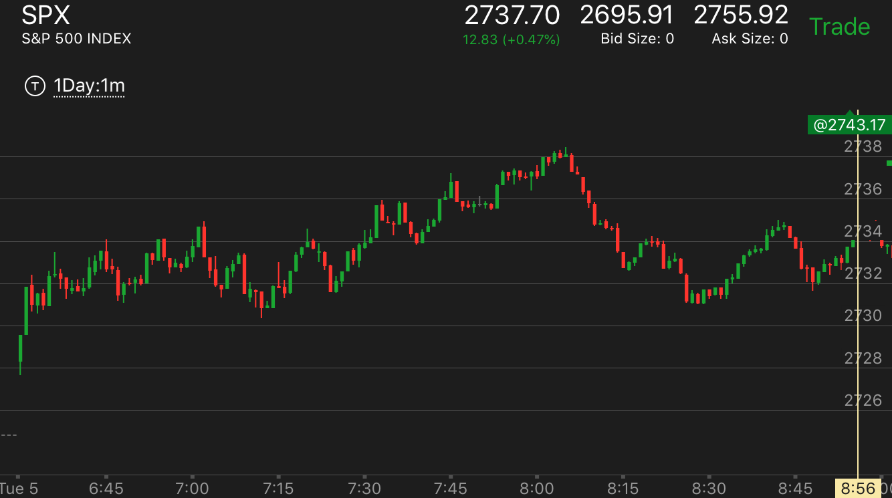
图示： 8：05开始快速下跌。它的前面出现了走平后上涨的走势，这个是个加速走势。说明到了顶部，
而前面上涨很久。这样即使快速下跌后走平，也不能去捞底。而是要设法做空。
不断从一个点反弹后，冲高，下来走平后破位
TOP
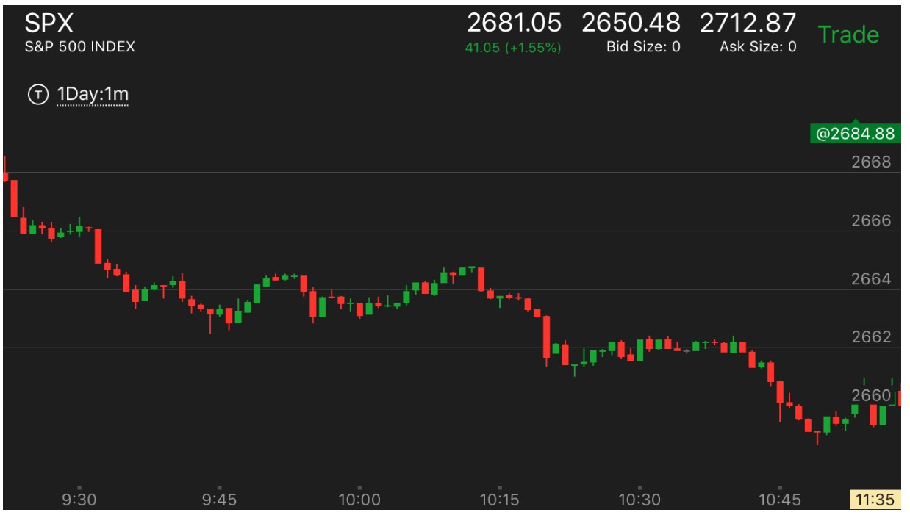
图示：
不断在2663反弹。然后下来，10：15在2664停下来，走平。一下跌破这个点数，
然后走平很久后。大跌
底部出现小幅冲高后，走平的走势
TOP
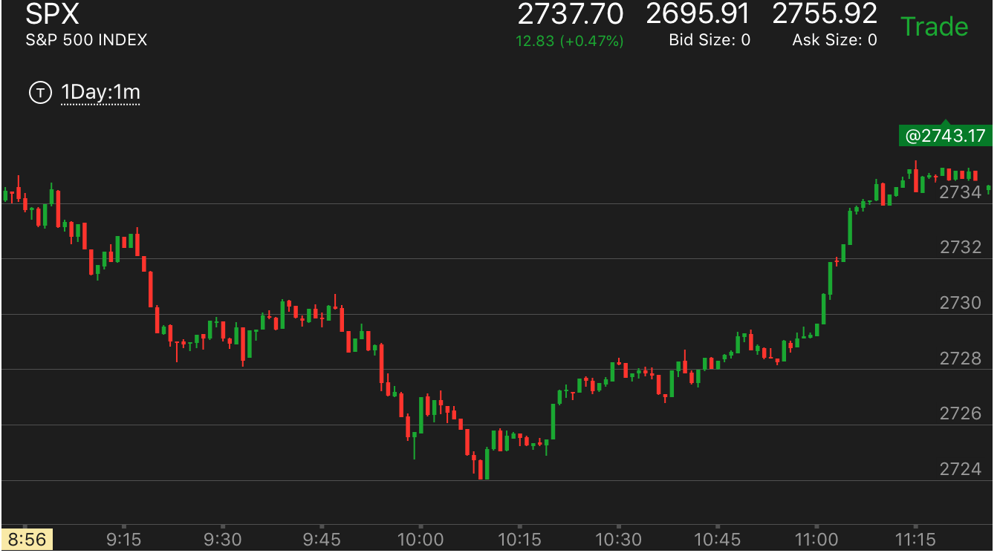
图示： 前面出现了两次跨越的见顶走势后，10：10上涨一点，然后走平。可以看到它上涨幅度非常的小。
所以这个就是底部了。可以做多。不用等双底或者再底部走平。这个就是底部的形状。它后面不断缓慢上涨，再也没有回到底部。
上升期间出现M形状的走平
TOP
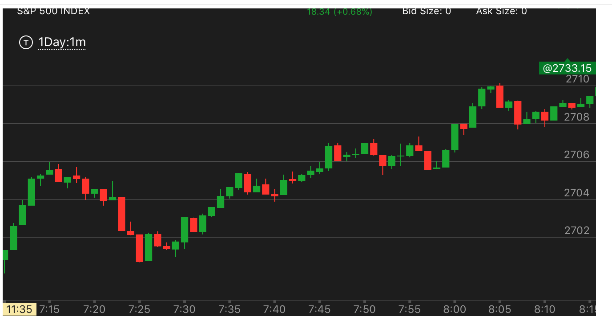
图示： 7:45到7：55 出现M形状的走平。这样的走平表示会继续上涨。不是要到顶的标志。
刚刚开盘后的小型走势
TOP
1. 刚刚开盘的时候，要注意，它是一直向一个方向运动，还是走平几分钟。
冲高后走平很久，然后大跌。这个出现在，走平的地方是阻力点。这样走平的地方就会下跌了。
前面冲高的时候，没有见到底部。
较大幅度冲高后，回调，但是回调幅度不大，不是典型的升势回调，就继续涨，但是很快被拉回。这样会大跌。
升势中，在下跌或者震荡过程中，先冲高，然后快速下跌，这样显得很吓人，但是却没有跌很多。完成了一个回调的任务。
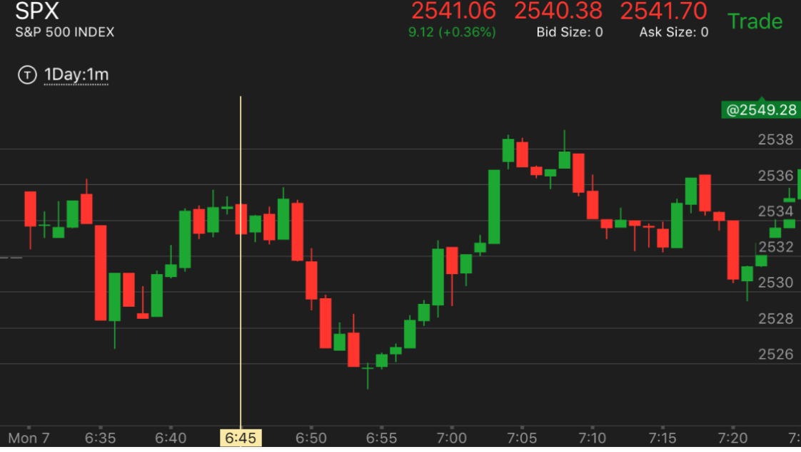
图示：
0. 刚刚开盘后，走平4分钟，突然一个bar降低8个点，可以想到，真的下跌不会这样的。而且它也不是一开盘就下跌的走势，
所以一旦下跌停止，就可以做多。
1. 开盘后走低。然后反弹，到了开盘点，停下来，一直走平。这样就会大跌。因为开盘点是个阻力点。
而前面呈现跌势。
2. 7：05的时候，冲高幅度比较大，然后停下来，回调。似乎是个升势回调，但是它回调幅度太小了，只有2个点。
回调速度也很慢，不是升势回调。这样它试图再涨一下，被拉回后，形成一个顶部走势，大跌。
3. 7：00反弹，然后停止。似乎是个下跌后，反弹，再次大跌的走势。但是仔细看看。它的关键点是2530.它早就超过了这个点。所以它不是。
应该继续观察。
4. 7：15它在下跌当中，先上涨，然后快速下跌。没有跌很多，但是显得吓人。完成了回调后，大涨。
5. 6：50开始下跌，从最高点下跌，速度很快，前面也没有铺垫，一下跌了10个点，可以想象，真实的下跌不会如此，一定会反弹。

图示：
1. 刚刚开盘，出现走低，反弹，再次走低。但是走低速度很高，然后走平。这个走势会反弹。
2. 它反弹后，出现了倾斜走低反弹的走势，6：55 然后加速下跌.
3. 到了7：00它出现双底后，稍微反弹一些，开始走平走平后，冲高，因为冲高幅度很大，所以它快速回调，这样形成了升势。
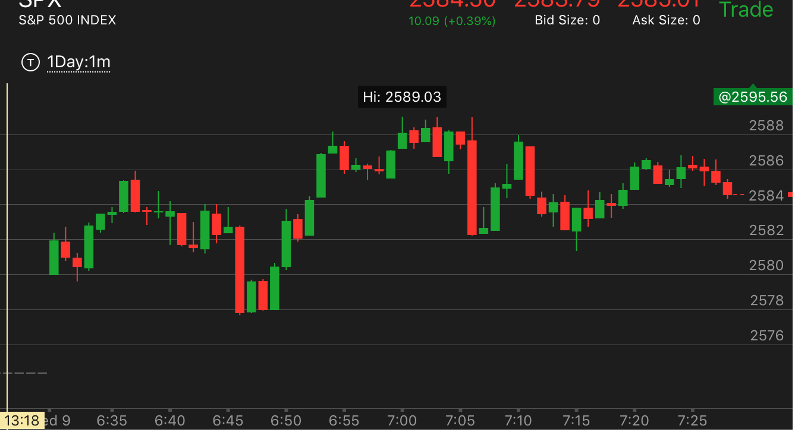
图示：
1. 开盘冲高，震荡，6：45快速走低，低于开盘点。似乎要大跌。因为低于了开盘点。但是。它没有出现反弹，而是在这个地方走平。
真实的大跌走势，应该是，大跌后，反弹到阻力点。然后继续大跌。这个图中。它下跌的位置才刚刚低于开盘点。另外开盘点不是一个很好的关键点。
因为不知道开盘前发生了什么。
2. 7：00走平后，从高位下跌的时候，7：05，一下就跌了很多，然后大力反弹。再次下跌。再次反弹。7：20走平几分钟。可以看到这个点比前面下跌高点只低了2个点。
而前面的下跌，没有到底。说明要大跌。如果错过前面。这个要做空。这个不是下跌后，回调，做多的走势。
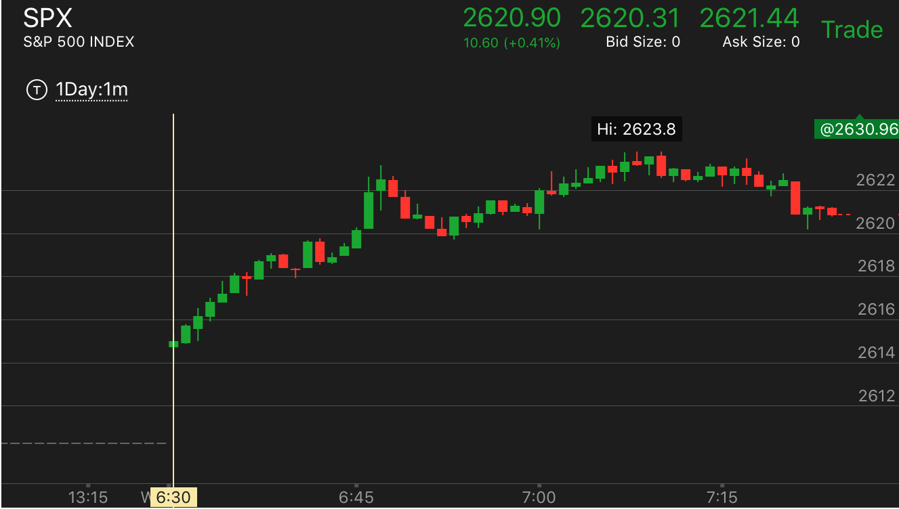
图示： 开盘冲高，6：45到达高点后，立刻回调。这样的不会是顶部。它回调后，走高，创新高。但是幅度不大。然后一直在高点走平。
基本和最高点持平。创新高，但是上不去，也不下来，一直横盘，加上前面涨了很多了。这样就表示要大跌了。果然后面，它稍微走低一些后，继续横盘，
然后大跌。
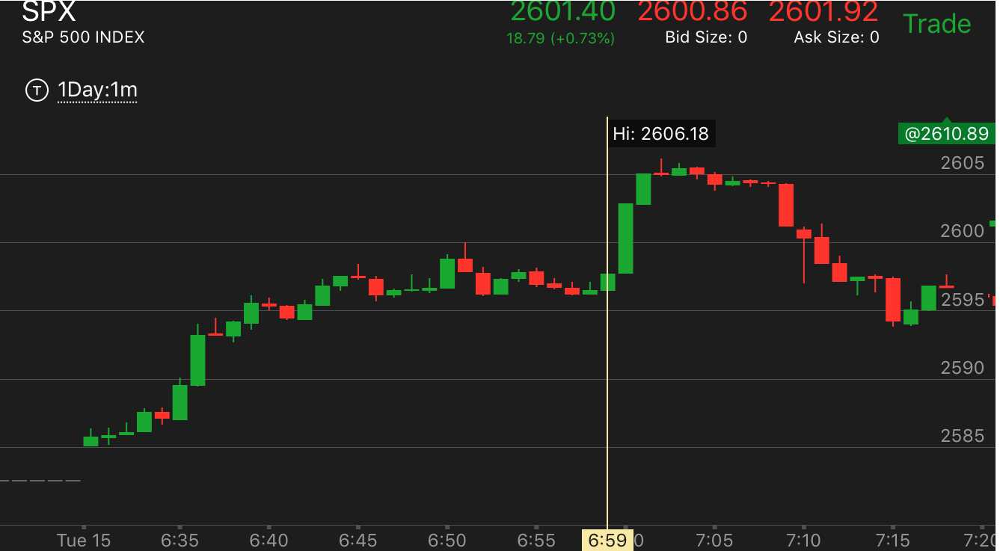
图示： 开盘冲高，6：50左右，它走低，似乎横盘。但是仔细观察，它其实是个逐渐增强走势。每个高点都高于前面
虽然高的不多。然后很快就下来了。没有机会再高点卖出。这样如果有人想再高点放个单子，就上当了。它大涨。完成最后一击。这样才是顶部。可以看到
它再顶部2606停留了3分钟。和前面不一样。
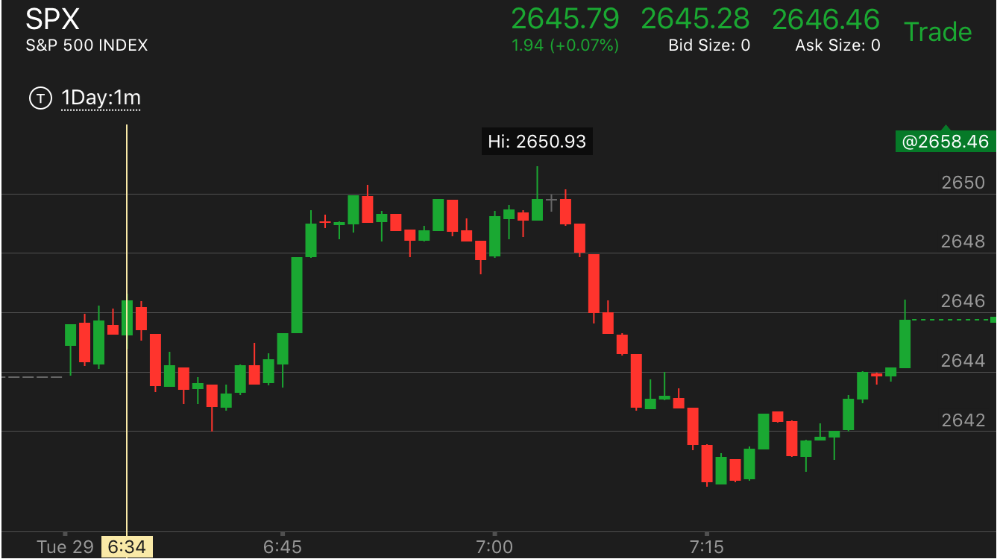
图示： 6:50冲高后，它形成一个双顶走势，双顶走势常常会破位后拉回。所以，7：05它冲高破位，
拉回原位，同时它上涨幅度比较大，又是刚刚开盘，容易反转。
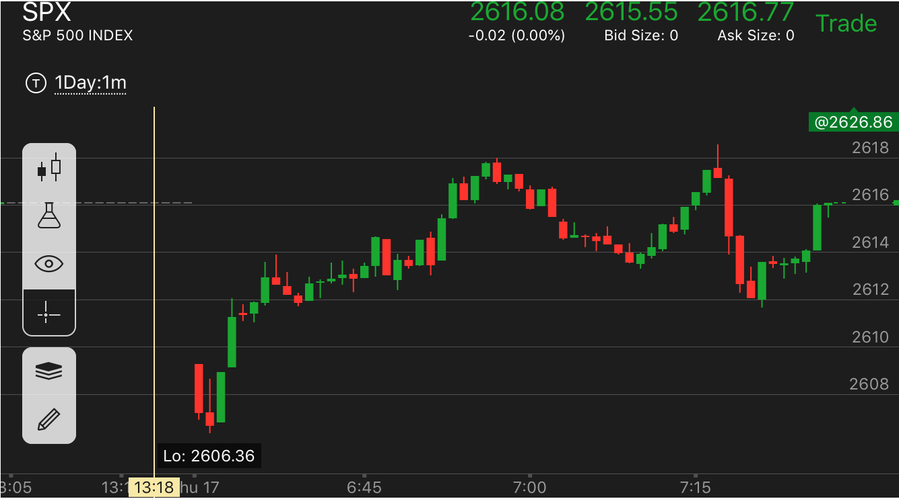
图示：7：16跨越下跌。这个下跌幅度比较大。而且是从最高点下跌的。但是大盘没有冲高很多。还有就是前面走平时间不长。
不能算走平。所有不存在一个关键点。这个下跌更像是一个快速回调。而不是真的大跌。应该等候，它明朗后继续操作。果然它反弹了。
刚刚开盘后，双底和双顶走势的判断。
1. 如果一开始就不断上涨或者下跌，然后回调，那么这个点不能是
顶或底的第一个点，一定要是大盘在盘中转折，来回两次才算双底或者双顶。
2. 制造新低或者新高的时候，一定是个加速的过程，不一定要很大。不能是缓慢的连续上涨。
3. 它一定会破位后，回来，回来的速度可能很快。
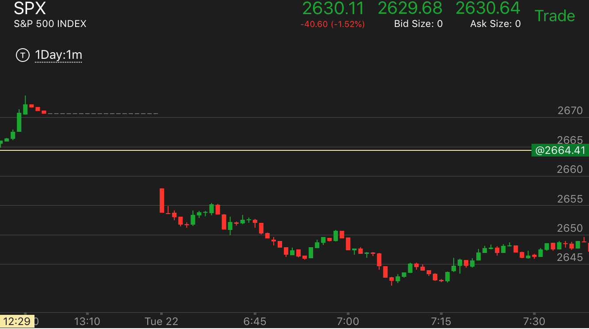
图示：刚刚开盘后，不断下跌，然后反弹，到了2655.再次下来，似乎是个加速下跌后，双底走势，
但是第一个底是一开盘就连续下跌形成的。不能算。所以它再这里徘徊是为了吸引人做多。然后它下跌。
到了7：10 和7：15的双底，才是真的双底，会反弹。
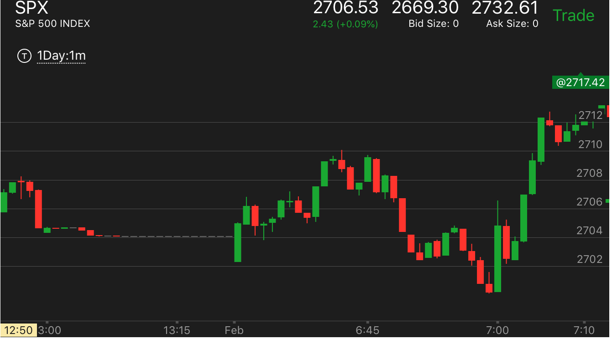
图示：刚刚开盘后，出现上涨，然后走平几分钟，
1. 然后加速冲高。这个本身说明就有问题。
2. 它立刻回调。看起来好像要大涨的样子，其实这回调也有问题，它第一个bar还是比较缓慢的。
3. 它再次上涨的时候，停留在前面高点，
然后再次下来幅度很大，但是这个本身已经说明要跌了。因为有了双顶。
4。 另外它回到高点的速度很快，大涨的走势会在低点停留几分钟的。看起来很强。其实是弱的。它的
回调幅度也不大。这些加在一起，都说明这个走势是双顶大跌，而不是回调后大涨走势。
5. 它从6：45快速下跌，幅度很大，然后走平。这个一定会反弹。但是在反弹前，还会走低一下。然后快速反弹。
所以可以在比走平点稍微低一些位置做多。
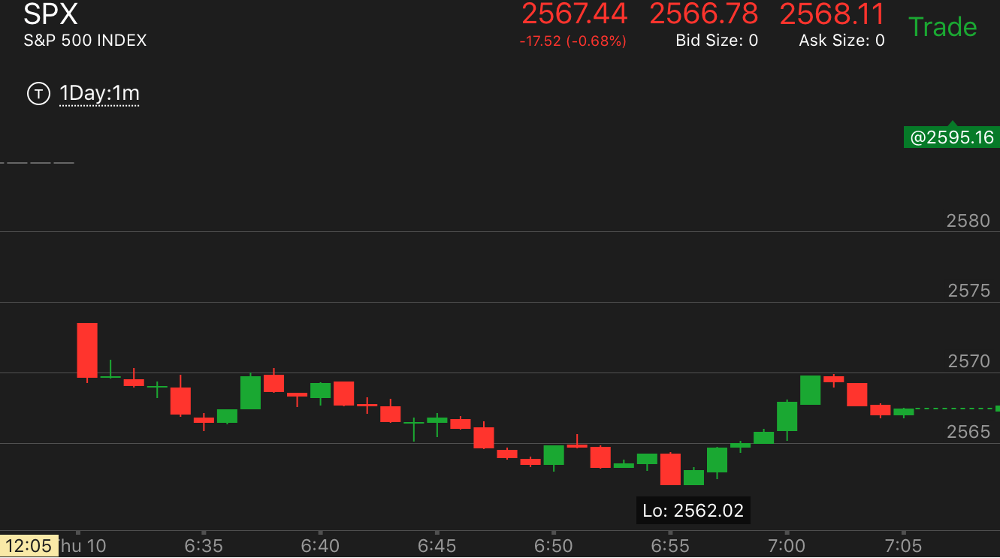
图示：开盘后，6:35反弹，再次下来。似乎是双底。
但是因为第一个底是开盘连续下跌造成的，所以不算。到了6：49它下跌，再次反弹，到了6：52 形成双底，破位后大涨。
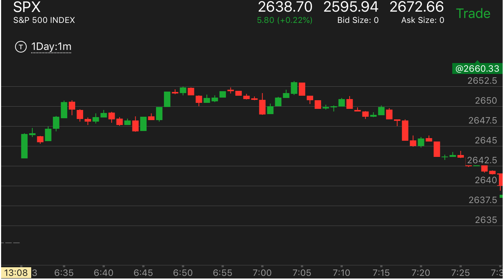
图示：开盘后，似乎出现了逐渐增强走势，但是它的上涨幅度不大。虽然创了新高。但是幅度太小了。
和前面的双底走势做比较，其实是一样的，只是方向相反，
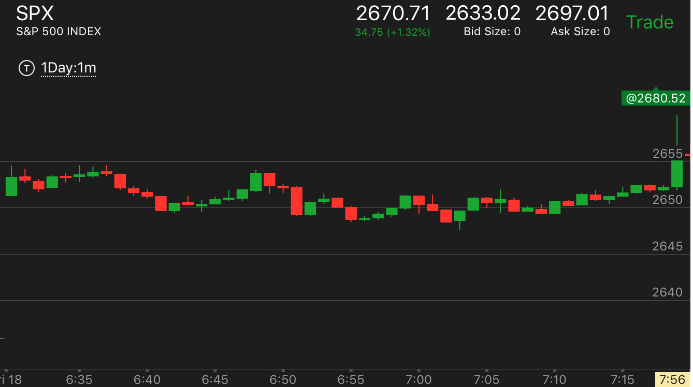
图示：开盘后，分别在6：40， 6：50， 6：55， 7：00出现了底部，还出现了新低。似乎是个逐渐增强走势。
但是如果仔细观察。它没有大跌。基本都在同一个水平上，逐渐增强的下跌，应该每次跌幅很大才对。这个连一个点都不到。说明不是逐渐增强的下跌走势，应该
做多，或者观察等明了后再做。
刚刚开盘后，出现快速下跌。要注意速度非常重要，而且是跨越式的，不是冲高大跌。
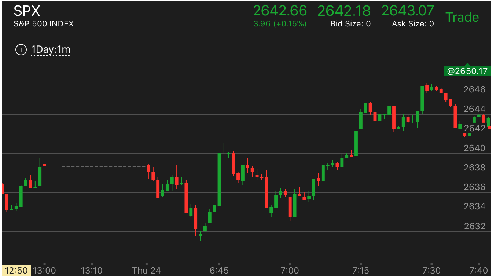
图示：开盘后，快速下跌，它不是冲高大跌，先跨越，然后再进一步下跌。可以想象真实的下跌不会这样。